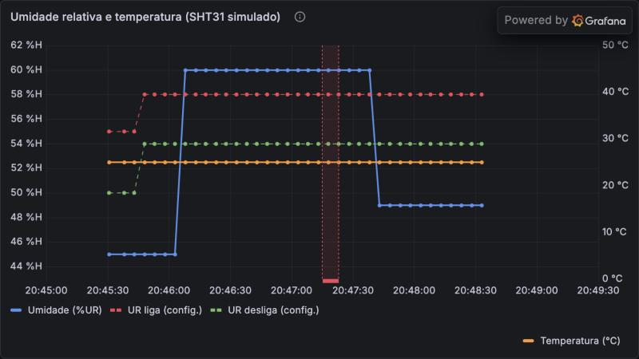
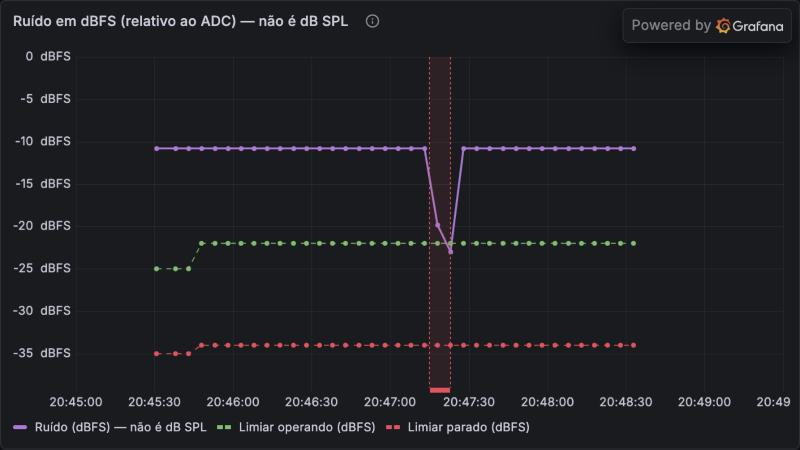
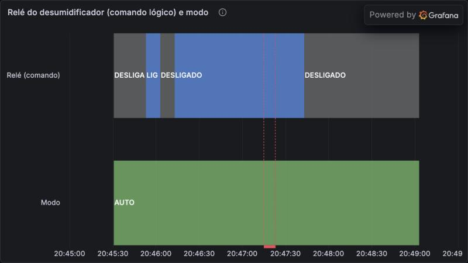
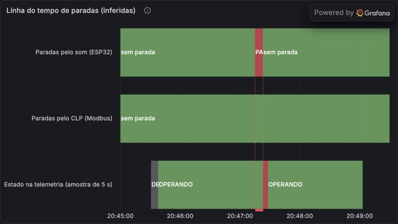
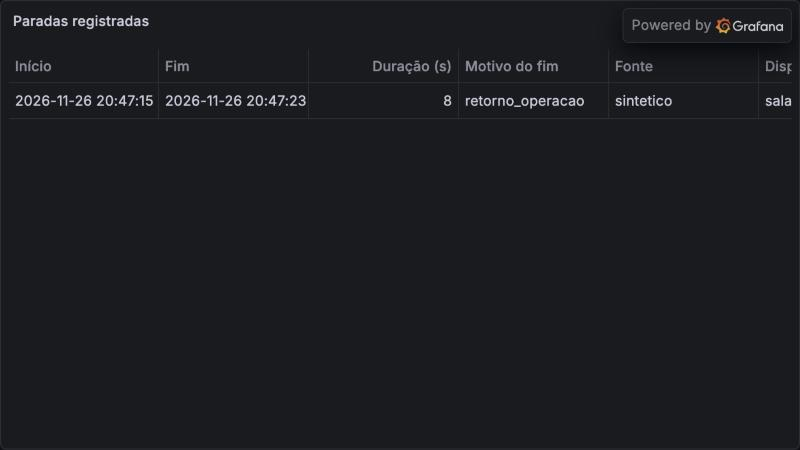
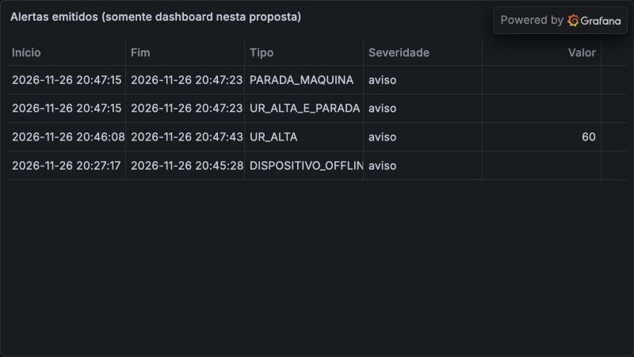

<meta charset="utf-8">
<meta name="viewport" content="width=device-width, initial-scale=1, viewport-fit=cover">
<title>MixNutri Sala Piloto 01</title>
<meta name="claude:viewport-fit-sides" content="cover">
<link rel="preconnect" href="https://fonts.googleapis.com">
<link rel="stylesheet" href="https://fonts.googleapis.com/css2?family=Archivo:wght@500;600;700&family=Inter:wght@400;500;600&family=JetBrains+Mono:wght@400;500&display=swap">
<style>
/* Layout: painel de status — faixa de cabeçalho, grade de estados, seções empilhadas com navegação fixa.
   Paleta da cápsula impressa: verde-oliva da tampa, corpo claro, LEDs âmbar/azul/verde. */
:root {
  --bg: #f5f6f1;
  --surface: #ffffff;
  --sunken: #eceee6;
  --line: #d9dccf;
  --fg: #1d2117;
  --muted: #5d6452;
  --accent: #5b6b2f;
  --accent-soft: #e4e9d3;
  --ok: #2f7d4f;
  --ok-soft: #dcefe2;
  --warn: #a3660a;
  --warn-soft: #f6e8cc;
  --todo: #9a3b2e;
  --todo-soft: #f4dcd7;
  --info: #2c5f8a;
  --info-soft: #dbe7f2;
  --font-display: "Archivo", "Helvetica Neue", Arial, sans-serif;
  --font-body: "Inter", system-ui, -apple-system, "Segoe UI", Roboto, sans-serif;
  --font-mono: "JetBrains Mono", ui-monospace, "SF Mono", Menlo, Consolas, monospace;
  --radius: 10px;
  color-scheme: light;
}
@media (prefers-color-scheme: dark) {
  :root:not([data-theme="light"]) {
    --bg: #12150f; --surface: #1a1e16; --sunken: #20251b; --line: #323a29; --fg: #e8ebdf; --muted: #a3ab93;
    --accent: #a9bd6e; --accent-soft: #2b3320; --ok: #6cc28f; --ok-soft: #1d3326; --warn: #e2a64a;
    --warn-soft: #3a2c14; --todo: #e58a7b; --todo-soft: #3d221d; --info: #7fb2de; --info-soft: #1d2c3b;
    color-scheme: dark;
  }
}
:root[data-theme="dark"] {
  --bg: #12150f; --surface: #1a1e16; --sunken: #20251b; --line: #323a29; --fg: #e8ebdf; --muted: #a3ab93;
  --accent: #a9bd6e; --accent-soft: #2b3320; --ok: #6cc28f; --ok-soft: #1d3326; --warn: #e2a64a;
  --warn-soft: #3a2c14; --todo: #e58a7b; --todo-soft: #3d221d; --info: #7fb2de; --info-soft: #1d2c3b;
  color-scheme: dark;
}

* { box-sizing: border-box; }
html { scroll-behavior: smooth; }
@media (prefers-reduced-motion: reduce) { html { scroll-behavior: auto; } }
body {
  margin: 0;
  background: var(--bg);
  color: var(--fg);
  font: 15px/1.55 var(--font-body);
  -webkit-font-smoothing: antialiased;
}
.wrap {
  max-width: 1120px;
  margin: 0 auto;
  padding-left: max(16px, env(safe-area-inset-left, 0px));
  padding-right: max(16px, env(safe-area-inset-right, 0px));
}
h1, h2, h3 { font-family: var(--font-display); text-wrap: balance; margin: 0; letter-spacing: -0.01em; }
h2 { font-size: 1.35rem; font-weight: 700; }
h3 { font-size: 1rem; font-weight: 600; }
p { margin: 0; }
a { color: var(--accent); text-underline-offset: 2px; }
a:focus-visible, button:focus-visible { outline: 2px solid var(--accent); outline-offset: 2px; border-radius: 4px; }
code, .mono { font-family: var(--font-mono); font-size: 0.86em; }
.num { font-variant-numeric: tabular-nums; }
.eyebrow { font-size: 0.72rem; text-transform: uppercase; letter-spacing: 0.08em; color: var(--muted); font-weight: 600; }

/* Cabeçalho */
.top {
  background: var(--surface);
  border-bottom: 1px solid var(--line);
}
.top .wrap { padding-block: 28px 22px; display: grid; gap: 14px; }
.top h1 { font-size: clamp(1.7rem, 3.6vw, 2.4rem); font-weight: 700; }
.top .lede { color: var(--muted); max-width: 68ch; }
.links { display: flex; flex-wrap: wrap; gap: 8px; }
.links a {
  display: inline-flex; align-items: center; gap: 6px;
  padding: 6px 11px; border: 1px solid var(--line); border-radius: 999px;
  background: var(--bg); color: var(--fg); text-decoration: none; font-size: 0.86rem; font-weight: 500;
}
.links a:hover { border-color: var(--accent); color: var(--accent); }
.stamp { font-size: 0.82rem; color: var(--muted); }

/* Navegação fixa */
body::before { content: ""; position: fixed; inset: 0 0 auto; height: env(safe-area-inset-top, 0px); z-index: 10; background: var(--surface); }
nav.sections {
  position: sticky; top: env(safe-area-inset-top, 0px); z-index: 5;
  background: color-mix(in srgb, var(--bg) 92%, transparent);
  backdrop-filter: blur(6px);
  border-bottom: 1px solid var(--line);
}
nav.sections .wrap { display: flex; gap: 4px; overflow-x: auto; padding-block: 8px; scrollbar-width: none; }
nav.sections a {
  flex: none; padding: 5px 10px; border-radius: 6px; font-size: 0.84rem; font-weight: 500;
  color: var(--muted); text-decoration: none;
}
nav.sections a:hover { background: var(--sunken); color: var(--fg); }

main .wrap { display: grid; gap: 44px; padding-block: 28px 56px; }
section { display: grid; gap: 16px; scroll-margin-top: 64px; }
.section-head { display: grid; gap: 4px; }
.section-head p { color: var(--muted); max-width: 72ch; }

/* Grade de estados */
.status { display: grid; grid-template-columns: repeat(auto-fill, minmax(240px, 1fr)); gap: 12px; }
.card {
  background: var(--surface); border: 1px solid var(--line); border-radius: var(--radius);
  padding: 14px 16px; display: grid; gap: 8px; align-content: start; min-width: 0;
}
.card .row { display: flex; justify-content: space-between; align-items: center; gap: 8px; }
.card p { color: var(--muted); font-size: 0.9rem; }
.card .evid { font-size: 0.82rem; color: var(--fg); }
.pill {
  display: inline-flex; align-items: center; gap: 6px; flex: none;
  padding: 2px 9px; border-radius: 999px; font-size: 0.74rem; font-weight: 600; white-space: nowrap;
}
.pill::before { content: ""; width: 7px; height: 7px; border-radius: 50%; background: currentColor; }
.ok   { color: var(--ok);   background: var(--ok-soft); }
.warn { color: var(--warn); background: var(--warn-soft); }
.todo { color: var(--todo); background: var(--todo-soft); }
.info { color: var(--info); background: var(--info-soft); }
.card.is-ok   { border-top: 3px solid var(--ok); }
.card.is-warn { border-top: 3px solid var(--warn); }
.card.is-todo { border-top: 3px solid var(--todo); }
.card.is-info { border-top: 3px solid var(--info); }

/* Arquitetura */
.diagram { background: var(--surface); border: 1px solid var(--line); border-radius: var(--radius); overflow-x: auto; }
.diagram svg { display: block; min-width: 760px; width: 100%; height: auto; }
.diagram .box { fill: var(--sunken); stroke: var(--line); }
.diagram .box.esp { fill: var(--accent-soft); stroke: var(--accent); }
.diagram .box.opt { fill: none; stroke: var(--line); stroke-dasharray: 5 4; }
.diagram .t1 { fill: var(--fg); font: 600 14px var(--font-display); }
.diagram .t2 { fill: var(--muted); font: 12px var(--font-body); }
.diagram .lbl { fill: var(--muted); font: 11px var(--font-mono); }
.diagram .arrow { stroke: var(--fg); stroke-width: 1.5; fill: none; }
.diagram .arrow.back { stroke: var(--accent); stroke-dasharray: 6 4; }
.diagram .head { fill: var(--fg); }
.diagram .head.back { fill: var(--accent); }
.diagram-note { font-size: 0.86rem; color: var(--muted); }

/* Linha do tempo do teste */
.steps { display: grid; gap: 0; background: var(--surface); border: 1px solid var(--line); border-radius: var(--radius); overflow: hidden; }
.step { display: grid; grid-template-columns: 2.2rem minmax(0, 1fr) minmax(0, 1.3fr); gap: 12px; padding: 12px 16px; border-top: 1px solid var(--line); align-items: start; }
.step:first-child { border-top: 0; }
.step .n { font: 600 0.9rem var(--font-mono); color: var(--accent); }
.step .act { font-weight: 600; }
.step .res { color: var(--muted); font-size: 0.92rem; }
@media (max-width: 640px) { .step { grid-template-columns: 2rem minmax(0, 1fr); } .step .res { grid-column: 2; } }

/* Capturas */
.gallery { display: grid; grid-template-columns: repeat(auto-fill, minmax(300px, 1fr)); gap: 14px; }
figure { margin: 0; background: var(--surface); border: 1px solid var(--line); border-radius: var(--radius); overflow: hidden; display: grid; }
figure button { all: unset; cursor: zoom-in; display: block; }
figure button:focus-visible { outline: 2px solid var(--accent); outline-offset: -2px; }
figure img { display: block; width: 100%; aspect-ratio: 16 / 9; object-fit: cover; background: #1d1f22; }
figcaption { padding: 10px 12px; font-size: 0.86rem; color: var(--muted); display: grid; gap: 2px; }
figcaption b { color: var(--fg); font-weight: 600; }
dialog.zoom { padding: 0; border: 0; border-radius: var(--radius); max-width: min(1100px, 96vw); background: var(--surface); }
dialog.zoom::backdrop { background: rgba(10, 12, 8, 0.72); }
dialog.zoom img { display: block; width: 100%; height: auto; }
dialog.zoom form { display: flex; justify-content: space-between; align-items: center; gap: 12px; padding: 10px 14px; }
dialog.zoom p { font-size: 0.88rem; color: var(--muted); }

/* Tabelas */
.table { background: var(--surface); border: 1px solid var(--line); border-radius: var(--radius); overflow-x: auto; }
table { border-collapse: collapse; width: 100%; font-size: 0.9rem; }
th, td { text-align: left; padding: 9px 14px; border-top: 1px solid var(--line); vertical-align: top; }
thead th { border-top: 0; font-size: 0.74rem; text-transform: uppercase; letter-spacing: 0.06em; color: var(--muted); font-weight: 600; background: var(--sunken); }
td.res { white-space: nowrap; }
td .pill { margin-top: 1px; }

/* Comandos */
.cmds { display: grid; gap: 10px; }
.cmd { background: var(--surface); border: 1px solid var(--line); border-radius: var(--radius); padding: 12px 14px; display: grid; gap: 8px; min-width: 0; }
.cmd .row { display: flex; justify-content: space-between; align-items: center; gap: 10px; }
.cmd pre { margin: 0; overflow-x: auto; background: var(--sunken); border-radius: 6px; padding: 10px 12px; font: 0.84rem/1.5 var(--font-mono); }
.copy {
  font: 500 0.8rem var(--font-body); color: var(--accent); background: transparent;
  border: 1px solid var(--line); border-radius: 6px; padding: 4px 10px; cursor: pointer;
}
.copy:hover { border-color: var(--accent); }

/* Duas colunas */
.cols { display: grid; grid-template-columns: repeat(auto-fit, minmax(300px, 1fr)); gap: 16px; align-items: start; }
.todo-list { background: var(--surface); border: 1px solid var(--line); border-radius: var(--radius); padding: 14px 16px; display: grid; gap: 10px; min-width: 0; }
.todo-list ul { margin: 0; padding-left: 1.1em; display: grid; gap: 6px; font-size: 0.92rem; }
.todo-list li::marker { color: var(--muted); }

footer { border-top: 1px solid var(--line); }
footer .wrap { padding-block: 18px 28px; font-size: 0.82rem; color: var(--muted); display: grid; gap: 4px; }
</style>

<header class="top">
  <div class="wrap">
    <span class="eyebrow">Desafio 10 · NEOINDÚSTRIA MS · SENAI-MS e UCDB</span>
    <h1>MixNutri · Sala Piloto 01</h1>
    <p class="lede">Umidade, temperatura, desumidificador e paradas da encapsuladora num só lugar. Este painel mostra o que já roda em simulação (Wokwi + Docker), como foi testado e o que falta para a apresentação.</p>
    <div class="links">
      <a href="https://github.com/viniciusvdct/DAC-MIXNUTRI" target="_blank" rel="noopener">Repositório no GitHub</a>
      <a href="https://wokwi.com/projects/479080199406642177" target="_blank" rel="noopener">Wokwi · firmware completo</a>
      <a href="https://wokwi.com/projects/479079864657061889" target="_blank" rel="noopener">Wokwi · circuito do item 1</a>
      <a href="https://github.com/viniciusvdct/DAC-MIXNUTRI/blob/main/GUIA_SIMULACAO.md" target="_blank" rel="noopener">Guia de simulação</a>
      <a href="https://github.com/viniciusvdct/DAC-MIXNUTRI/blob/main/item3-integracao/docs/contrato-mqtt-v2.md" target="_blank" rel="noopener">Contrato MQTT v2</a>
    </div>
    <p class="stamp">Situação em 27/11/2026 · dados sintéticos · ruído em dBFS (relativo ao conversor do ESP32, não dB SPL)</p>
  </div>
</header>

<nav class="sections" aria-label="Seções">
  <div class="wrap">
    <a href="#estado">Estado</a>
    <a href="#arquitetura">Arquitetura</a>
    <a href="#ponta-a-ponta">Teste ponta a ponta</a>
    <a href="#capturas">Grafana</a>
    <a href="#testes">Testes</a>
    <a href="#contrato">Contrato MQTT</a>
    <a href="#rodar">Como rodar</a>
    <a href="#hardware">Kit físico</a>
    <a href="#falta">O que falta</a>
  </div>
</nav>

<main>
  <div class="wrap">

    <section id="estado" aria-labelledby="h-estado">
      <div class="section-head">
        <h2 id="h-estado">Estado das partes</h2>
        <p>Verde está pronto e testado; âmbar está em andamento; vermelho ainda não existe ou depende de outra equipe.</p>
      </div>
      <div class="status">
        <article class="card is-ok">
          <div class="row"><h3>Circuito e banco</h3><span class="pill ok">Pronto</span></div>
          <p>Item 1. Circuito da sala piloto no Wokwi (ESP32, SHT31, som, relé, LED) e script SQL com telemetria, paradas, configuração e alertas.</p>
          <span class="evid num">Chips 9/9 · validação do banco OK</span>
        </article>
        <article class="card is-ok">
          <div class="row"><h3>Firmware do ESP32</h3><span class="pill ok">Pronto</span></div>
          <p>Item 2. Histerese de UR, parada pelo som, MQTT com produto e lote, comandos AUTO/MANUAL, fila na Flash e Modbus opcional.</p>
          <span class="evid num">Lógica 15/15 · compila para Wokwi e kit físico</span>
        </article>
        <article class="card is-ok">
          <div class="row"><h3>Integração em Docker</h3><span class="pill ok">Pronto</span></div>
          <p>Item 3. Mosquitto com senha e ACL, PostgreSQL, Node-RED com o painel Admin e Grafana, em um comando.</p>
          <span class="evid num">SQL T1–T10 · ACL 5/5 · Admin 14/14 · Grafana OK</span>
        </article>
        <article class="card is-ok">
          <div class="row"><h3>Teste ponta a ponta</h3><span class="pill ok">Aprovado</span></div>
          <p>Item 5. Roteiro completo ao vivo: umidade alta, relé, parada, alertas, comandos do Admin e queda de rede.</p>
          <span class="evid num">34 telemetrias na queda de rede, 0 perdidas</span>
        </article>
        <article class="card is-warn">
          <div class="row"><h3>Índice de quebra</h3><span class="pill warn">Em revisão</span></div>
          <p>Inspeções de cápsulas por lote no Admin, com o índice de quebra ao lado das condições ambientais no Grafana.</p>
          <span class="evid num">Teste do banco OK · formulário do Admin a testar na tela</span>
        </article>
        <article class="card is-warn">
          <div class="row"><h3>Kit físico</h3><span class="pill warn">Em bancada</span></div>
          <p>ESP32 gravado pelo Mac com o teste de bancada. Faltam ligar o DHT11, o microfone, o relé e os LEDs e calibrar o som.</p>
          <span class="evid">Guia de montagem pronto</span>
        </article>
        <article class="card is-todo">
          <div class="row"><h3>Alertas externos</h3><span class="pill todo">Pendente</span></div>
          <p>Hoje os alertas aparecem no Grafana e no Admin. O envio por Telegram e e-mail existe na entrega das equipes 2 e 3 e precisa vir para o kit.</p>
          <span class="evid">Equipes 2 e 3</span>
        </article>
        <article class="card is-todo">
          <div class="row"><h3>Alinhamento entre equipes</h3><span class="pill todo">Decidir</span></div>
          <p>A entrega das equipes 2 e 3 usa outro contrato MQTT. É preciso confirmar o kit integrado como backend oficial.</p>
          <span class="evid">Ver “O que falta”</span>
        </article>
      </div>
    </section>

    <section id="arquitetura" aria-labelledby="h-arq">
      <div class="section-head">
        <h2 id="h-arq">Arquitetura</h2>
        <p>O controle da umidade acontece no ESP32, mesmo sem rede. O histórico, os alertas e os painéis ficam no servidor.</p>
      </div>
      <div class="diagram">
        <svg viewBox="0 0 960 268" role="img" aria-label="O ESP32 publica por MQTT no Mosquitto; o Node-RED grava no PostgreSQL e o Grafana lê o banco. O painel Admin, dentro do Node-RED, envia comandos, configuração e contexto ao ESP32 pelo Mosquitto. O simulador Modbus é opcional.">
          <defs>
            <marker id="m" viewBox="0 0 10 10" refX="9" refY="5" markerWidth="7" markerHeight="7" orient="auto-start-reverse"><path class="head" d="M0 0 L10 5 L0 10 z"/></marker>
            <marker id="mb" viewBox="0 0 10 10" refX="9" refY="5" markerWidth="7" markerHeight="7" orient="auto-start-reverse"><path class="head back" d="M0 0 L10 5 L0 10 z"/></marker>
          </defs>
          <rect class="box esp" x="20" y="30" width="170" height="80" rx="9"/>
          <text class="t1" x="34" y="56">ESP32</text>
          <text class="t2" x="34" y="76">UR e temperatura · som</text>
          <text class="t2" x="34" y="94">relé do desumidificador</text>

          <rect class="box" x="290" y="30" width="160" height="80" rx="9"/>
          <text class="t1" x="304" y="56">Mosquitto</text>
          <text class="t2" x="304" y="76">MQTT com senha e ACL</text>
          <text class="t2" x="304" y="94">mixnutri/sala01/…</text>

          <rect class="box" x="550" y="30" width="160" height="80" rx="9"/>
          <text class="t1" x="564" y="56">Node-RED</text>
          <text class="t2" x="564" y="76">valida e grava</text>
          <text class="t2" x="564" y="94">cada mensagem</text>

          <rect class="box" x="790" y="30" width="150" height="80" rx="9"/>
          <text class="t1" x="804" y="56">PostgreSQL</text>
          <text class="t2" x="804" y="76">telemetria, paradas,</text>
          <text class="t2" x="804" y="94">alertas, inspeções</text>

          <rect class="box opt" x="290" y="176" width="160" height="66" rx="9"/>
          <text class="t1" x="304" y="203">Simulador Modbus</text>
          <text class="t2" x="304" y="223">opcional (CLP)</text>

          <rect class="box" x="550" y="176" width="160" height="66" rx="9"/>
          <text class="t1" x="564" y="203">Painel Admin</text>
          <text class="t2" x="564" y="223">limites, modo, lote</text>

          <rect class="box" x="790" y="176" width="150" height="66" rx="9"/>
          <text class="t1" x="804" y="203">Grafana</text>
          <text class="t2" x="804" y="223">painel da sala</text>

          <path class="arrow" d="M190 58 H286" marker-end="url(#m)"/>
          <text class="lbl" x="204" y="50">telemetria</text>
          <path class="arrow back" d="M290 88 H194" marker-end="url(#mb)"/>
          <text class="lbl" x="208" y="104">comandos</text>
          <path class="arrow" d="M450 58 H546" marker-end="url(#m)"/>
          <path class="arrow back" d="M550 88 H454" marker-end="url(#mb)"/>
          <path class="arrow" d="M710 70 H786" marker-end="url(#m)"/>
          <path class="arrow" d="M865 110 V172" marker-end="url(#m)"/>
          <text class="lbl" x="872" y="146">só leitura</text>
          <path class="arrow back" d="M650 176 V114" marker-end="url(#mb)"/>
          <text class="lbl" x="658" y="148">config · contexto</text>
          <path class="arrow" d="M450 209 H488 Q500 209 500 197 V134 Q500 122 512 122 H568 Q580 122 580 114" marker-end="url(#m)"/>
          <text class="lbl" x="508" y="146">Modbus TCP</text>
        </svg>
      </div>
      <p class="diagram-note">Linha cheia: dados que chegam ao banco. Tracejada: comandos, configuração e contexto que o Admin manda ao ESP32. Na simulação, o ESP32 roda no Wokwi e chega ao Mosquitto local por uma ponte com o broker público HiveMQ. No kit físico, o ESP32 se conecta direto ao Mosquitto pela rede Wi-Fi local.</p>
    </section>

    <section id="ponta-a-ponta" aria-labelledby="h-e2e">
      <div class="section-head">
        <h2 id="h-e2e">Teste ponta a ponta ao vivo</h2>
        <p>27/11/2026: firmware no Wokwi → HiveMQ → ponte → Mosquitto → Node-RED → PostgreSQL → Grafana. Configuração v7 enviada pelo Admin: liga em 58 %UR, desliga em 54 %UR.</p>
      </div>
      <div class="steps">
        <div class="step"><span class="n">1</span><span class="act">Admin envia contexto, configuração v7, MANUAL e AUTO</span><span class="res">As 4 mensagens foram aceitas pelo ESP32. A v7 ficou registrada e ativa no banco, e a telemetria passou a sair com produto e lote.</span></div>
        <div class="step"><span class="n">2</span><span class="act">Umidade sobe de 45 % para 60 %</span><span class="res">Relé liga por histerese. Depois de 60 s acima do limite, abre o alerta UR_ALTA (60 % contra 58 %).</span></div>
        <div class="step"><span class="n">3</span><span class="act">Som da máquina cai para 0 %</span><span class="res">Parada registrada com produto e lote. Abrem PARADA_MAQUINA e UR_ALTA_E_PARADA.</span></div>
        <div class="step"><span class="n">4</span><span class="act">Som volta a 80 %</span><span class="res">Parada encerrada em 8 s (retorno à operação) e os alertas dela fechados.</span></div>
        <div class="step"><span class="n">5</span><span class="act">Umidade cai para 49 %</span><span class="res">Relé desliga e o alerta UR_ALTA fecha.</span></div>
        <div class="step"><span class="n">6</span><span class="act">Rede cortada por cerca de 50 s</span><span class="res">Mensagens guardadas na Flash e reenviadas ao voltar: 34 telemetrias em sequência, nenhuma faltando e nenhum erro de gravação.</span></div>
      </div>
    </section>

    <section id="capturas" aria-labelledby="h-cap">
      <div class="section-head">
        <h2 id="h-cap">Grafana durante o teste</h2>
        <p>Capturas reais do painel na janela do teste (20:45–20:49 no horário local). Clique para ampliar.</p>
      </div>
      <div class="gallery">
        <figure><button type="button" data-zoom></button>
          <figcaption><b>Umidade e temperatura</b>A UR passa do limite de 58 % e volta para 49 %; a faixa vermelha é a parada.</figcaption></figure>
        <figure><button type="button" data-zoom></button>
          <figcaption><b>Ruído em dBFS</b>Queda abaixo do limiar de parada e retorno.</figcaption></figure>
        <figure><button type="button" data-zoom></button>
          <figcaption><b>Relé e modo</b>MANUAL pelo Admin, depois AUTO; liga com a UR alta e desliga com a UR normal.</figcaption></figure>
        <figure><button type="button" data-zoom></button>
          <figcaption><b>Linha do tempo das paradas</b>Parada de 8 s pelo som; Modbus desligado.</figcaption></figure>
        <figure><button type="button" data-zoom></button>
          <figcaption><b>Paradas registradas</b>Início, fim, duração e motivo.</figcaption></figure>
        <figure><button type="button" data-zoom></button>
          <figcaption><b>Alertas emitidos</b>Abertos e fechados durante o roteiro. O DISPOSITIVO_OFFLINE é de uma execução anterior.</figcaption></figure>
      </div>
    </section>

    <section id="testes" aria-labelledby="h-testes">
      <div class="section-head">
        <h2 id="h-testes">Testes automatizados</h2>
        <p>Todos rodados de novo em 27/11/2026, com o kit subido do zero.</p>
      </div>
      <div class="table">
        <table>
          <thead><tr><th>Teste</th><th>O que confere</th><th>Resultado</th></tr></thead>
          <tbody>
            <tr><td><code>test_logica.cpp</code></td><td>Histerese, tempo mínimo do relé, MANUAL com validade, classificação pelo som, Modbus e fila na Flash</td><td class="res num"><span class="pill ok">15/15</span></td></tr>
            <tr><td><code>test_models.c</code></td><td>Chips simulados do Wokwi: SHT31 com CRC e sinal de som</td><td class="res num"><span class="pill ok">9/9</span></td></tr>
            <tr><td>PlatformIO</td><td>Firmware para o Wokwi (SHT31) e para o kit físico (DHT11); diagnóstico do item 1; teste de bancada</td><td class="res"><span class="pill ok">Compila</span></td></tr>
            <tr><td><code>reproduzir_log.py</code></td><td>114 mensagens reais do firmware gravadas no banco</td><td class="res num"><span class="pill ok">0 rejeitadas</span></td></tr>
            <tr><td><code>teste_funcoes.sql</code></td><td>Duplicatas, UR alta com persistência, paradas, reinício e versão de configuração</td><td class="res num"><span class="pill ok">T1–T10</span></td></tr>
            <tr><td><code>testar_acesso_mqtt.py</code></td><td>Sem acesso anônimo, senha errada recusada, ESP32 sem permissão para mandar comandos</td><td class="res num"><span class="pill ok">5/5</span></td></tr>
            <tr><td><code>testar_admin.py</code></td><td>Login, comando sem retain, configuração com versão crescente, contexto</td><td class="res num"><span class="pill ok">14/14</span></td></tr>
            <tr><td><code>verificar_grafana.py</code></td><td>Fonte de dados, painel provisionado e cada consulta</td><td class="res"><span class="pill ok">OK</span></td></tr>
            <tr><td><code>teste_inspecoes.sql</code></td><td>Inspeções de cápsulas: índice por inspeção e ponderado, reenvios, dados inválidos, contexto ambiental</td><td class="res"><span class="pill ok">OK</span></td></tr>
            <tr><td>Reinício do Node-RED</td><td>Telemetria enviada com o Node-RED parado chega ao banco depois</td><td class="res num"><span class="pill ok">3/3</span></td></tr>
            <tr><td>Desempenho com 30 dias</td><td>Gravação de leitura com UR alta, com 518 mil linhas no banco</td><td class="res num"><span class="pill ok">&lt; 1 ms</span></td></tr>
          </tbody>
        </table>
      </div>
    </section>

    <section id="contrato" aria-labelledby="h-contrato">
      <div class="section-head">
        <h2 id="h-contrato">Contrato MQTT</h2>
        <p>Base <code>mixnutri/sala01/</code>. Todas as mensagens do ESP32 levam <code>device_id</code>, <code>boot_id</code>, <code>seq</code>, horário, produto e lote.</p>
      </div>
      <div class="table">
        <table>
          <thead><tr><th>Tópico</th><th>Quem envia</th><th>Conteúdo</th></tr></thead>
          <tbody>
            <tr><td><code>telemetria</code></td><td>ESP32, a cada 5 s</td><td>Temperatura, UR, ruído em dBFS, estado da máquina, relé, modo, produto e lote</td></tr>
            <tr><td><code>eventos</code></td><td>ESP32</td><td>Início e fim de parada, relé, falha de sensor, configuração aplicada, reinício</td></tr>
            <tr><td><code>confirmacoes</code></td><td>ESP32</td><td>Aceito ou recusado, com o motivo, para cada pedido</td></tr>
            <tr><td><code>disponibilidade</code></td><td>ESP32 e broker</td><td><code>online</code> ao conectar; <code>offline</code> se a conexão cair</td></tr>
            <tr><td><code>comandos</code></td><td>Admin, sem retain</td><td>AUTO ou MANUAL ligado/desligado, com validade e identificador</td></tr>
            <tr><td><code>configuracao</code></td><td>Admin, retido</td><td>UR máxima, histerese e limiar de ruído, com versão crescente</td></tr>
            <tr><td><code>contexto</code></td><td>Admin, retido</td><td>Produto e lote em produção</td></tr>
          </tbody>
        </table>
      </div>
    </section>

    <section id="rodar" aria-labelledby="h-rodar">
      <div class="section-head">
        <h2 id="h-rodar">Como rodar a simulação</h2>
        <p>Precisa de Docker e Python 3. Passo a passo completo no <a href="https://github.com/viniciusvdct/DAC-MIXNUTRI/blob/main/GUIA_SIMULACAO.md" target="_blank" rel="noopener">guia de simulação</a>.</p>
      </div>
      <div class="cmds">
        <div class="cmd">
          <div class="row"><h3>1. Baixar e preparar</h3><button class="copy" type="button" data-copy="c1">Copiar</button></div>
          <pre id="c1">git clone https://github.com/viniciusvdct/DAC-MIXNUTRI.git
cd DAC-MIXNUTRI/item3-integracao
cp .env.exemplo .env   # troque cada TROCAR_* por uma senha forte</pre>
        </div>
        <div class="cmd">
          <div class="row"><h3>2. Subir o kit</h3><button class="copy" type="button" data-copy="c2">Copiar</button></div>
          <pre id="c2">docker compose up -d --build</pre>
        </div>
        <div class="cmd">
          <div class="row"><h3>3. Ver dados sem o Wokwi</h3><button class="copy" type="button" data-copy="c3">Copiar</button></div>
          <pre id="c3">python3 -I ferramentas/reproduzir_log.py ../item2-firmware/exemplos/mqtt-exemplo.log ferramentas/cenario-boot-fecha-parada.log</pre>
        </div>
        <div class="cmd">
          <div class="row"><h3>4. Ligar ao Wokwi (opcional)</h3><button class="copy" type="button" data-copy="c4">Copiar</button></div>
          <pre id="c4">PONTE_BROKER=broker.hivemq.com:1883 docker compose up -d mosquitto</pre>
          <p class="diagram-note">Depois abra o projeto do firmware no Wokwi e clique em ▶. Deixe a aba visível: escondida, a simulação fica lenta e cai.</p>
        </div>
      </div>
      <div class="table">
        <table>
          <thead><tr><th>Endereço</th><th>O que é</th><th>Login</th></tr></thead>
          <tbody>
            <tr><td><code>http://127.0.0.1:3000</code></td><td>Grafana, painel MixNutri sala01</td><td><code>GRAFANA_ADMIN_*</code> do <code>.env</code></td></tr>
            <tr><td><code>http://127.0.0.1:1880/dashboard/admin</code></td><td>Painel Admin: limites, modo, produto, lote e inspeções</td><td><code>NODERED_ADMIN_*</code></td></tr>
            <tr><td><code>http://127.0.0.1:1880</code></td><td>Editor do Node-RED</td><td><code>NODERED_ADMIN_*</code></td></tr>
          </tbody>
        </table>
      </div>
    </section>

    <section id="hardware" aria-labelledby="h-hw">
      <div class="section-head">
        <h2 id="h-hw">Kit físico de bancada</h2>
        <p>Mesma lógica do Wokwi, com DHT11 no lugar do SHT31 e microfone P2 de eletreto no lugar do MAX9814. O ESP32 já foi gravado pelo Mac; as ligações estão no <a href="https://github.com/viniciusvdct/DAC-MIXNUTRI/blob/hardware-bancada/GUIA_MONTAGEM_FISICA.md" target="_blank" rel="noopener">guia de montagem</a>.</p>
      </div>
      <div class="table">
        <table>
          <thead><tr><th>Peça</th><th>Ligação no ESP32</th><th>Sinal</th></tr></thead>
          <tbody>
            <tr><td>DHT11</td><td class="mono">GPIO 4 (10 kΩ para 3V3)</td><td>Temperatura e UR</td></tr>
            <tr><td>Microfone P2</td><td class="mono">GPIO 34 (com polarização)</td><td>Ruído da máquina</td></tr>
            <tr><td>Relé 5 V</td><td class="mono">GPIO 26, alimentado pelo VIN</td><td>Desumidificador (LED verde nos contatos)</td></tr>
            <tr><td>LED amarelo</td><td class="mono">GPIO 25</td><td>Máquina parada</td></tr>
            <tr><td>LED vermelho</td><td class="mono">GPIO 27</td><td>UR acima do limite; pisca se o sensor falhar</td></tr>
            <tr><td>LED azul da placa</td><td class="mono">GPIO 2</td><td>MQTT conectado</td></tr>
          </tbody>
        </table>
      </div>
    </section>

    <section id="falta" aria-labelledby="h-falta">
      <div class="section-head">
        <h2 id="h-falta">O que falta</h2>
        <p>A entrega das equipes 2 e 3 usa outro contrato MQTT (tópico <code>iotmixnutri/</code>, comando retido, ruído em dB e broker sem senha), e o ESP32 não conversa com ela. O pacote integrado já roda o kit da equipe 1; falta as três equipes confirmarem isso.</p>
      </div>
      <div class="cols">
        <div class="todo-list">
          <div class="row"><h3>Equipe 1</h3></div>
          <ul>
            <li>Montar e validar o kit físico: LEDs, DHT11, polaridade do relé e calibração do microfone.</li>
            <li>Gravar o firmware completo no ESP32 e conferir no Admin e no Grafana.</li>
            <li>Revisar e mergear o registro de inspeções (índice de quebra).</li>
          </ul>
        </div>
        <div class="todo-list">
          <div class="row"><h3>Equipes 2 e 3</h3></div>
          <ul>
            <li>Confirmar o kit integrado do repositório como backend oficial.</li>
            <li>Trazer o envio de alertas por Telegram e e-mail.</li>
            <li>Trazer a aba S7 (desabilitada), o campo de duração mínima da parada no Admin e o visual dos painéis.</li>
            <li>Reescrever o memorial das etapas 3 e 4 para o que roda hoje.</li>
          </ul>
        </div>
        <div class="todo-list">
          <div class="row"><h3>Todas as equipes</h3></div>
          <ul>
            <li>Lançar inspeções reais de cápsulas para cruzar a quebra com a umidade.</li>
            <li>Memorial técnico integrado, recomendações de controle ambiental e vídeo pitch.</li>
            <li>Combinar a demonstração: computador do servidor, Wi-Fi do ESP32 e como passar as senhas sem usar o grupo.</li>
          </ul>
        </div>
      </div>
    </section>

  </div>
</main>

<footer>
  <div class="wrap">
    <span>Equipe 1 · circuito e firmware · fonte: <code>PROGRESSO.md</code> do repositório.</span>
    <span>Coincidência entre umidade alta e parada é correlação no tempo, não prova de causa. Limites e tempos são didáticos.</span>
  </div>
</footer>

<dialog class="zoom" id="zoom" aria-label="Captura ampliada">
  
  <form method="dialog"><p id="zoom-cap"></p><button class="copy" type="submit">Fechar</button></form>
</dialog>

<script>
(function () {
  var dlg = document.getElementById('zoom');
  var img = document.getElementById('zoom-img');
  var cap = document.getElementById('zoom-cap');
  document.querySelectorAll('[data-zoom]').forEach(function (btn) {
    btn.addEventListener('click', function () {
      var src = btn.querySelector('img');
      img.src = src.src;
      img.alt = src.alt;
      var fc = btn.closest('figure').querySelector('figcaption');
      cap.textContent = fc ? fc.textContent : '';
      if (dlg.showModal) dlg.showModal();
    });
  });
  dlg.addEventListener('click', function (e) { if (e.target === dlg) dlg.close(); });

  document.querySelectorAll('[data-copy]').forEach(function (btn) {
    btn.addEventListener('click', function () {
      var pre = document.getElementById(btn.getAttribute('data-copy'));
      var texto = pre.textContent;
      var feito = function () { btn.textContent = 'Copiado'; setTimeout(function () { btn.textContent = 'Copiar'; }, 1600); };
      var selecionar = function () {
        var r = document.createRange();
        r.selectNodeContents(pre);
        var s = window.getSelection();
        s.removeAllRanges();
        s.addRange(r);
        btn.textContent = 'Selecionado: use Ctrl+C';
      };
      try {
        navigator.clipboard.writeText(texto).then(feito, selecionar);
      } catch (e) { selecionar(); }
    });
  });
})();
</script>
